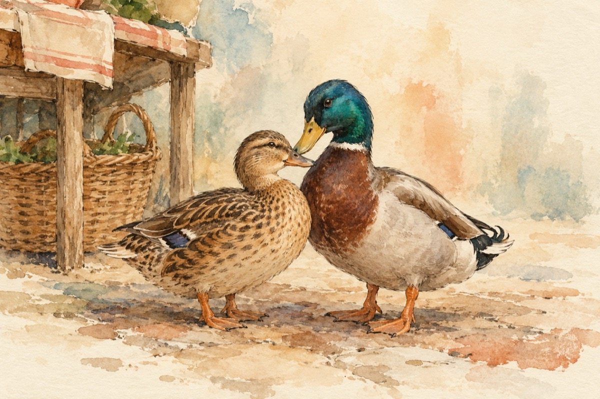

La piață
Încântat de precupeață
Ce voia să vândă-o rață
Un rățoi înfumurat
S-a dus la ea și-a-ntrebat.
-Mac, mac, mac stimată ,,țață’’
Cu cât dai frumoasa Rață?
-Aicea este o piață
Nicidecum o coștereață
-Pe mine m-ai întrebat?
Măcăi rața mac mac,
Dacă-mi ești sau nu pe plac?
-Ce frumos dragă rățușcă
Văd că ai și plisc și gușă
Și frumoasă și deșteaptă,
Nu vrei ca să-mi fi nevastă?!...
Mac, mac, mac, mac, mac, mac
Și așa s-a și-ntâmplat
Pe rățușcă și rățoi
Un curcan i-a cununat
Și-acum măcăie în doi
Vasile Groza
Apare și în: Copile sau Cartea copiilor.